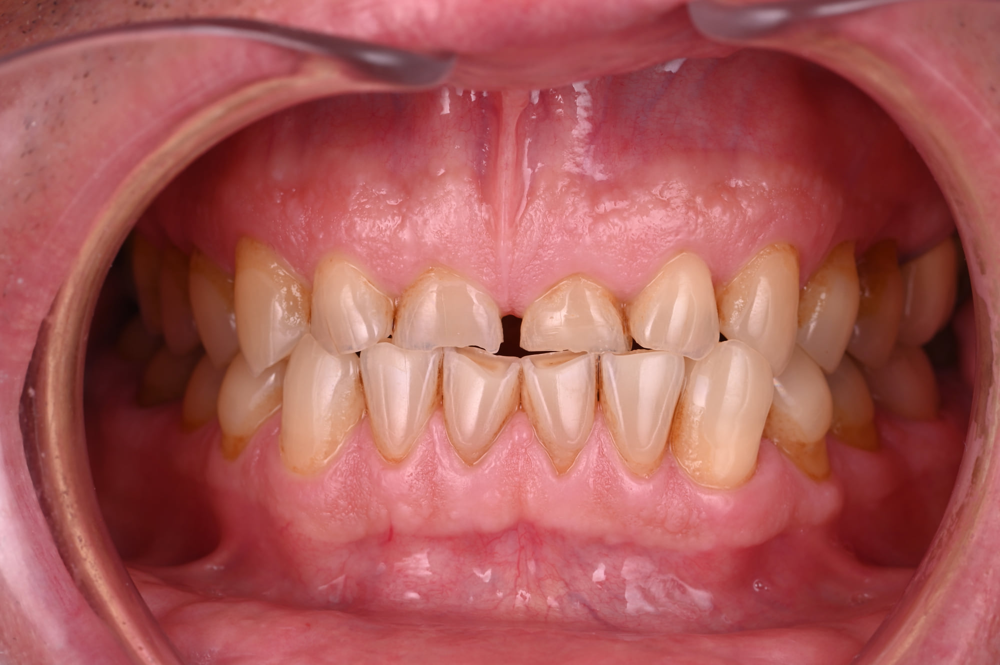

Accueil › Patient › Réhabilitation des dents usées
L’acte
Réhabilitation des dents usées
Technique additive
Réhabiliter une dentition usée ne signifie plus automatiquement poser des couronnes. Après contrôle des facteurs actifs, une reconstruction peut associer composite direct, restaurations partielles et céramiques selon la quantité de tissu perdu, la fonction et le projet esthétique. L’objectif est de restaurer simultanément volumes, sourire et fonction en préservant autant que possible la structure dentaire résiduelle.

Praticien hospitalier, Pitié-Salpêtrière · CMME, Sainte-Anne

1 / 5
Pourquoi reconstruire
Les techniques adhésives contemporaines permettent souvent de reconstruire les volumes perdus de manière additive, avec composites ou restaurations partielles, plutôt que de préparer systématiquement les dents pour des couronnes.
Réhabiliter une dentition usée ne signifie plus automatiquement poser des couronnes
Les techniques adhésives contemporaines ont profondément modifié la prise en charge des usures modérées à sévères.
Dans de nombreuses situations, il est aujourd’hui possible de reconstruire ce qui a été perdu en ajoutant de la matière, plutôt qu’en préparant systématiquement les dents pour des couronnes périphériques.
Composite direct, restaurations partielles adhésives et céramiques peuvent être combinés selon les besoins. Les consensus récents considèrent les approches directes et indirectes minimalement invasives comme des options viables pour la dentition usée.
Pourquoi reconstruire des dents usées ?
Une réhabilitation peut être envisagée lorsque l’usure entraîne :
Le traitement n’est pas décidé uniquement à partir d’un « degré d’usure ».
Il doit répondre à un bénéfice réel pour le patient.
- dents antérieures très raccourcies ;
- perte de proportions ;
- diminution importante des volumes ;
- sensibilités ;
- fragilisation ;
- altération de la fonction ;
- manque d’espace restaurateur ;
- impact esthétique important.
Que cherche-t-on à reconstruire ?
Pas seulement les dents : un système
Une dentition sévèrement usée est donc souvent l’un des meilleurs exemples de rencontre entre :
esthétique — fonction — préservation.
Le projet peut chercher à restaurer simultanément
- les longueurs ;
- les volumes ;
- la morphologie ;
- les contacts ;
- le guidage ;
- la fonction ;
- l’esthétique du sourire.
2 / 5
Avec quoi reconstruire
Peut-on reconstruire sans couronnes ?
Très souvent, oui
Les restaurations adhésives permettent de traiter de nombreuses dents en conservant davantage de structure résiduelle.
Une revue systématique avec méta-analyse publiée en 2025 conclut à des performances cliniques favorables des réhabilitations full-mouth minimalement invasives dans les usures modérées à sévères, avec des différences selon matériaux et techniques.
Une autre revue systématique récente confirme la place des approches directes et indirectes minimalement invasives pour la dentition usée.
Cela ne signifie pas qu’une couronne n’est jamais indiquée.
Cela signifie qu’elle n’est plus automatiquement le point de départ.
Composite ou céramique ?
Le matériau vient après le projet
Les restaurations indirectes en céramique peuvent être privilégiées lorsque :
Un même patient peut recevoir plusieurs types de restaurations.
Composite ou céramique ?
Le composite peut être particulièrement intéressant pour :
- reconstruire de manière additive ;
- tester certaines formes ;
- traiter de nombreux secteurs avec une grande conservativité ;
- faciliter la réparation.
- le volume à reconstruire est important ;
- les contraintes mécaniques ou esthétiques le justifient ;
- une restauration partielle fabriquée au laboratoire offre un meilleur compromis.
3 / 5
La dimension verticale
Qu’est-ce que la dimension verticale d’occlusion ?
La DVO décrit la relation verticale entre les arcades lorsque les dents sont en occlusion.
Dans certaines réhabilitations d’usure, une modification de cette dimension permet :
Mais une dent usée ne signifie pas automatiquement que sa DVO doit être « remontée ».
La décision doit être fondée sur les besoins restaurateurs et esthétiques du cas. Les consensus récents insistent sur une planification individualisée.
- de recréer de l’espace ;
- de reconstruire les dents ;
- de restaurer certaines proportions ;
- d’organiser le projet fonctionnel.
Faut-il tester longtemps une nouvelle DVO avant de restaurer ?
Pas systématiquement
Cette idée a longtemps été très répandue.
Un essai randomisé publié en 2023 n’a pas montré de bénéfice à utiliser systématiquement un appareil amovible pour tester une augmentation de DVO avant la restauration de patients présentant une usure modérée à sévère.
La revue systématique et le consensus 2025 concluent également que les preuves sont insuffisantes pour imposer une phase d’évaluation à tous les patients. Elle peut toutefois être utile pour certains cas, notamment pour organiser le traitement ou gérer les attentes.
4 / 5
Comment on procède
Comment planifie-t-on une réhabilitation ?
Dans les cas complexes, la phase de planification est presque aussi importante que la réalisation.
Combien de temps dure une réhabilitation ?
La durée totale dépend :
Il n’existe pas de durée unique applicable à toutes les réhabilitations.
- du nombre de dents ;
- de la nécessité de stabiliser une érosion ;
- des matériaux ;
- d’une éventuelle phase intermédiaire ;
- du nombre de séances ;
- de la collaboration laboratoire.
La démarche peut comprendre
- diagnostic de l’usure ;
- contrôle des facteurs actifs ;
- photographie ;
- scan 3D ;
- analyse esthétique ;
- analyse fonctionnelle ;
- projet des futurs volumes ;
- choix de la DVO si modification nécessaire ;
- décision direct / indirect ;
- réalisation progressive ;
- maintenance.
5 / 5
Et l’esthétique ?
Que devient l’esthétique dans une réhabilitation fonctionnelle ?
Elle fait partie du traitement
Les dents antérieures usées peuvent modifier :
Les reconstruire ne consiste donc pas seulement à « remettre de la matière ».
Il faut recréer une architecture de sourire.
- la ligne du sourire ;
- l’exposition au repos ;
- les proportions ;
- la jeunesse perçue du sourire ;
- la dynamique avec les lèvres.
Questions fréquentes
C’est possible dans certains cas, mais ce n’est pas une règle. Le choix dépend du projet, de la perte de substance et des contraintes.
L’approche adhésive vise justement à préserver au maximum les structures et les pulpes. Une dévitalisation n’est pas une étape systématique.
Les données disponibles indiquent qu’une augmentation correctement planifiée peut être tolérée. Elle doit toutefois être individualisée et répondre à un besoin restaurateur.
Comme toute restauration, elles peuvent s’user, s’écailler ou nécessiter une maintenance. La réparabilité fait partie du choix thérapeutique.
Reconstruire sans sacrifier inutilement
Un bilan permet de comprendre la situation et les options possibles, avant tout engagement.
Prendre rendez-vousSources scientifiques
Les références ci-dessous soutiennent les principaux messages cliniques de cette page.
- [1] Ioannidis A, Pitta J, Panadero RA, et al. Rehabilitation Strategies and Occlusal Vertical Dimension Considerations in the Management of Worn Dentitions: Consensus Statement. J Esthet Restor Dent. 2025;37(3):702–706. — DOI : 10.1111/jerd.13432 PubMed
- Fan J, Wang B, Wang L, et al. Clinical performance of minimally invasive full-mouth rehabilitation using different materials and techniques for patients with moderate to severe tooth wear: a systematic review and meta-analysis. Clin Oral Investig. 2025;29(2):96. — DOI : 10.1007/s00784-025-06181-z PubMed
- Chantler JGM, Pirc M, Strauss F, et al. Rehabilitation of the Worn Dentition With Direct and Indirect Minimally Invasive Concepts—A Systematic Review and Meta-Analysis. J Esthet Restor Dent. 2025;37(3):690–701. — DOI : 10.1111/jerd.13384 PubMed
- Goldstein G, Goodacre C, MacGregor K. Occlusal Vertical Dimension: Best Evidence Consensus Statement. J Prosthodont. 2021;30(S1):12–19. — DOI : 10.1111/jopr.13315 PubMed
- Crins LAMJ, Opdam NJM, Kreulen CM, Bronkhorst EM, Huysmans MCDNJM, Loomans BAC. Randomised controlled trial on testing an increased vertical dimension of occlusion prior to restorative treatment of tooth wear. J Oral Rehabil. 2023;50(4):267–275. — DOI : 10.1111/joor.13408 PubMed
- Chantler J, Strasding M, Strauss F, Ioannidis A, Naenni N. Importance of an Evaluation Phase When Increasing the Occlusal Vertical Dimension: A Systematic Review. J Esthet Restor Dent. 2025;37(3):669–689. — DOI : 10.1111/jerd.13331 PubMed